Sonarr and Radarr with torrents, step by step
The previous walkthrough pointed the *arrs at zurg for Usenet, with zurg answering as a SABnzbd. This is the other half: zurg answers as a qBittorrent, the *arrs hand it a magnet or a .torrent instead of an NZB, and the release goes onto a debrid account instead of a news server. The import is the same trick — a rename inside __magic__, nothing downloaded to import, nothing copied.
Everything below was captured against zurg 2026.08.30.0459-nightly-73-g5b4c9790, Sonarr 4.0.19.2979, Radarr 6.3.0.10514 and Prowlarr 2.5.2.5491, on a live install with a real AllDebrid account. Host and user names have been changed to yowmamasita@zurg-server; nothing else in the captured output was altered, and API keys shown are illustrative.
Before you start
Three things have to be true. Check all three now — every one of them fails later as something that looks unrelated.
- zurg has an account that can add torrents — Real-Debrid, TorBox or AllDebrid. A Usenet account cannot take a magnet: an install whose only provider is
nzbaccepts every grab and then refuses it. zurg says so at startup. magic.enabledistrue. Without it the save path does not exist and every import fails. See__magic__.- The mount is visible to the *arr at the path zurg reports. If the *arr runs in a container, read
step 8 before you configure anything.
Check the first two straight out of the config file, in zurg's working directory:
$ grep -A3 '^providers:' config.yml
providers:
- type: alldebrid
token: <redacted>
$ grep -A3 '^magic:' config.yml
magic:
enabled: true
allow_delete: falseThe order of the providers: list matters here. A grab is offered to every account that takes torrents, in that order, and an account that refuses or stalls on it is given up on and the next is tried. If you hold two accounts, put the one you would rather spend first.
1. Turn the endpoint on
Two ways, same result. Both write to config.yml and both need a restart: the routes that serve __magic__ and the qBittorrent endpoint are registered once, when zurg starts.
Option A — the dashboard
Open zurg's dashboard, click Config, and scroll to __magic__ & Download Clients. Turn on Serve __magic__ and qBittorrent Endpoint.
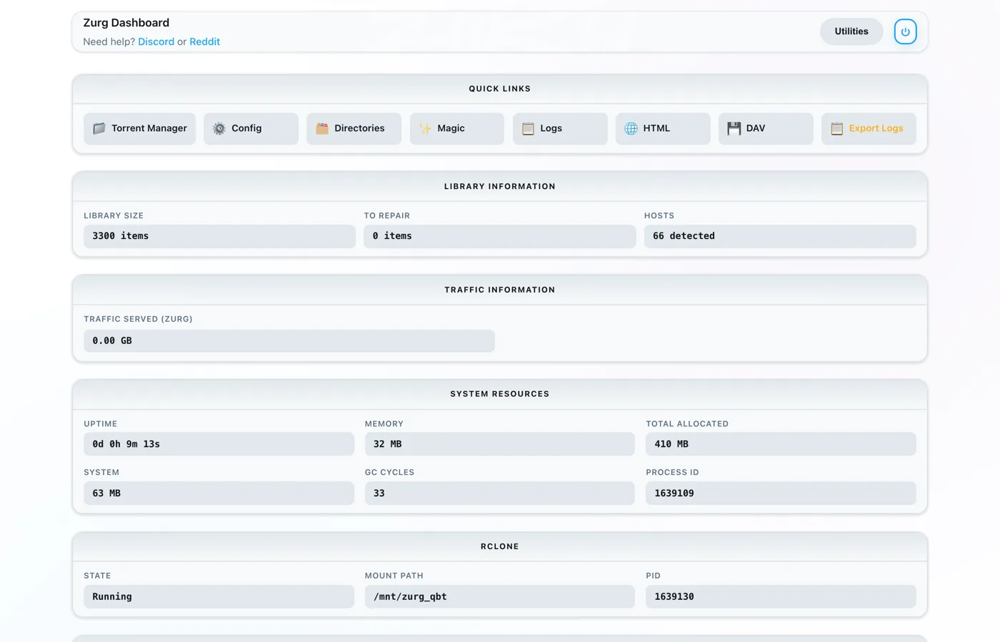
Config is where the setting lives; Magic is where you will watch grabs arrive later.
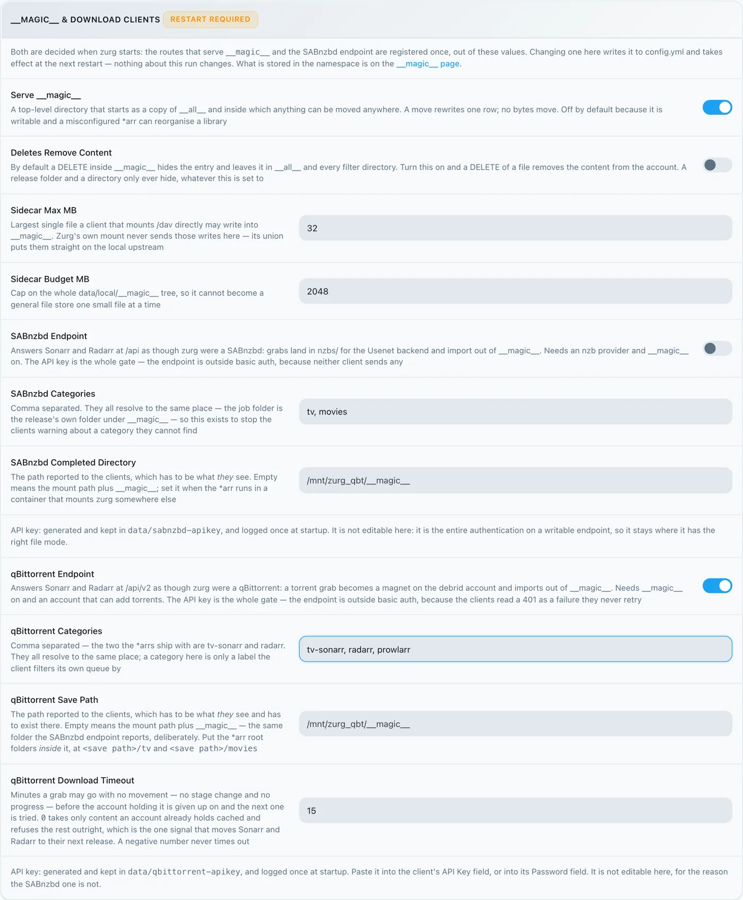
Leave qBittorrent Save Path empty unless your *arr mounts zurg somewhere other than zurg does — see
Option B — config.yml
Add the block by hand and restart zurg.
magic:
enabled: true
qbittorrent:
enabled: true
api_key: "" # empty = zurg generates one and keeps it
categories: [tv-sonarr, radarr]
save_path: "" # empty = <mount_path>/__magic__
download_timeout_mins: 15 # 0 accepts only cached content, negative never gives upThe categories are not folders. They all resolve to the same place — the release's own folder under __magic__. The list exists only so a client stops warning about a category it cannot find. If Sonarr's category is tv-sonarr, tv-sonarr must be in this list. Prowlarr, if you use it, wants prowlarr — see
Restart zurg, then confirm the endpoint registered and the provider took:
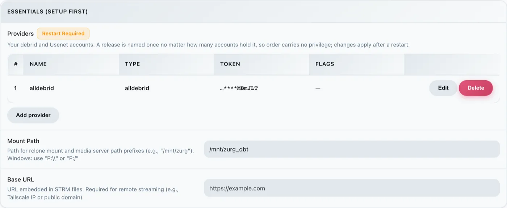
One alldebrid row is all the endpoint needs — any of the three torrent-capable types.
The startup log says the same two things, and it is worth reading them once:
INFO router.qbittorrent qBittorrent API on /api/v2 and /qbittorrent/api/v2, save path /mnt/zurg_qbt/__magic__, categories tv-sonarr, radarr
INFO router.qbittorrent qBittorrent: torrents are offered to alldebrid, in that order2. Find the API key
The API key is the entire authentication on this endpoint, so get it right once and don't paste it anywhere public.
If you left api_key empty, zurg generated one on first start, wrote it to data/qbittorrent-apikey, and logged it once:
$ cat data/qbittorrent-apikey
d09abba6e81524618e2d43a3748af385
$ journalctl -u zurg | grep 'generated API key'
qBittorrent: generated API key d09abba6e8… — paste it into Sonarr or Radarr's
API Key field, or pin it as qbittorrent.api_key in config.ymlIllustrative key — yours will differ. The file survives restarts, so the key is stable once generated.
If you set api_key yourself, it is in config.yml and no file is written.
This endpoint is outside zurg's basic auth. The *arrs authenticate to a download client the download client's own way, and their HTTP layer turns a basic-auth 401 into "unable to connect" with nothing actionable in it — so zurg deliberately exempts /api/v2. The API key is the whole gate. Treat the port the way you treat the rest of zurg's: on a trusted network, or behind something that is.
Three ways to present the key, all accepted:
Authorization: Bearer <key>— what the client sends when its API Key field is filled in. This is the recommended one; it skips the login entirely.- The key as the password on
auth/login, with any username. Use this if you would rather fill in Username and Password. - zurg's own dashboard username and password, if
username:andpassword:are set inconfig.yml.
3. Prove it answers
Do this before touching Sonarr. Ten seconds, and it separates "zurg is wrong" from "the *arr is wrong" for the rest of the setup.
$ KEY=d09abba6e81524618e2d43a3748af385
$ ZURG=192.168.88.244:9995
$ curl -s "http://$ZURG/api/v2/app/webapiVersion"
Forbidden
$ curl -s -H "Authorization: Bearer $KEY" "http://$ZURG/api/v2/app/webapiVersion"
2.11.2
$ curl -s -H "Authorization: Bearer $KEY" "http://$ZURG/api/v2/app/version"
v5.0.4
$ curl -s -H "Authorization: Bearer $KEY" "http://$ZURG/api/v2/app/preferences" | jq .save_path
"/mnt/zurg_qbt/__magic__"The bare Forbidden is the healthy answer. The clients' first probe is an unauthenticated GET /api/v2/app/webapiVersion, and real qBittorrent answers it 403 when the API is there but nobody is logged in — so that is what zurg answers, and the client reads it as "v2 supported, authenticate now". A plain 404 instead means qbittorrent.enabled is still false or zurg has not been restarted since you changed it.
Then check that a wrong key is actually refused:
$ curl -s -o /dev/null -w "%{http_code}\n" -H "Authorization: Bearer wrongkey" \
"http://$ZURG/api/v2/torrents/info"
403save_path is the path zurg will hand the clients — check now that it is a path they can open.
Both URL shapes work, so either is fine in the client's URL Base field:
4. Make the root folders
Make them before you add them, because the *arr's Add Root Folder dialog browses the live filesystem and will not offer a folder that does not exist.
$ mkdir -p /mnt/zurg_qbt/__magic__/tv /mnt/zurg_qbt/__magic__/movies
$ ls -d /mnt/zurg_qbt/__magic__/tv /mnt/zurg_qbt/__magic__/movies
/mnt/zurg_qbt/__magic__/movies
/mnt/zurg_qbt/__magic__/tvSubstitute your own mount_path for /mnt/zurg_qbt.
The root folder must be inside __magic__, not at it and not above it — the same rule as the Usenet walkthrough, for the same reason: both clients raise a health check when a root folder is the download client's output folder, Radarr also raises one when a root folder contains it, and a root folder one level inside is the one arrangement neither complains about. That guide has the screenshots of getting it wrong.
There is a second reason that is specific to torrents: a move whose destination is outside __magic__ is a move between two filesystems, which is a copy — and a copy off a debrid mount reads the whole release back over the network. Remove Completed staying on (
5. Add the client in Sonarr
A brand-new Sonarr blocks everything behind a first-run screen. Pick Forms (Login Page), set a username and password, and click Save.
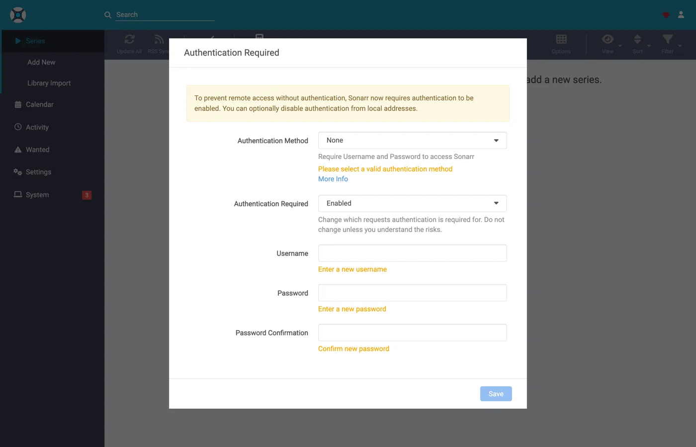
It will not let you past until Authentication Method is something other than None.
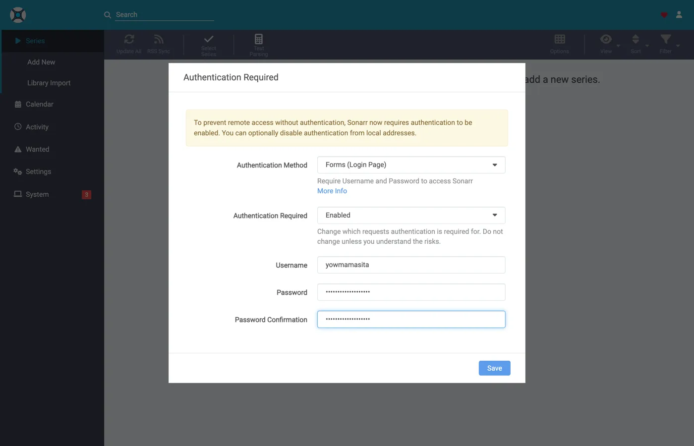
After Save you are signed out once and land on the login page.
Settings → Download Clients
Go to Settings → Download Clients. On a fresh install there is nothing here but the + card.
Click the + under "Download Clients" — not the one further down under "Remote Path Mappings".
Choose qBittorrent from the Torrents column.
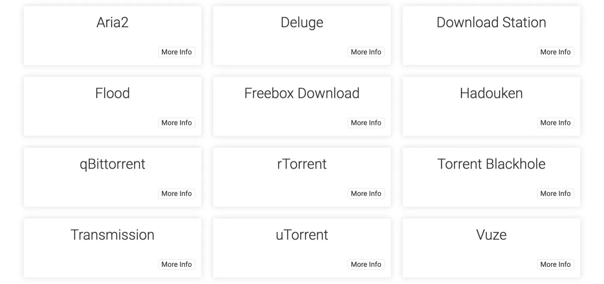
zurg impersonates qBittorrent specifically, so nothing else in this list will work. The two columns are the give-away for which guide you are following: SABnzbd sits under Usenet, qBittorrent under Torrents.
The dialog opens with qBittorrent's own defaults — localhost, port 8080, no key.
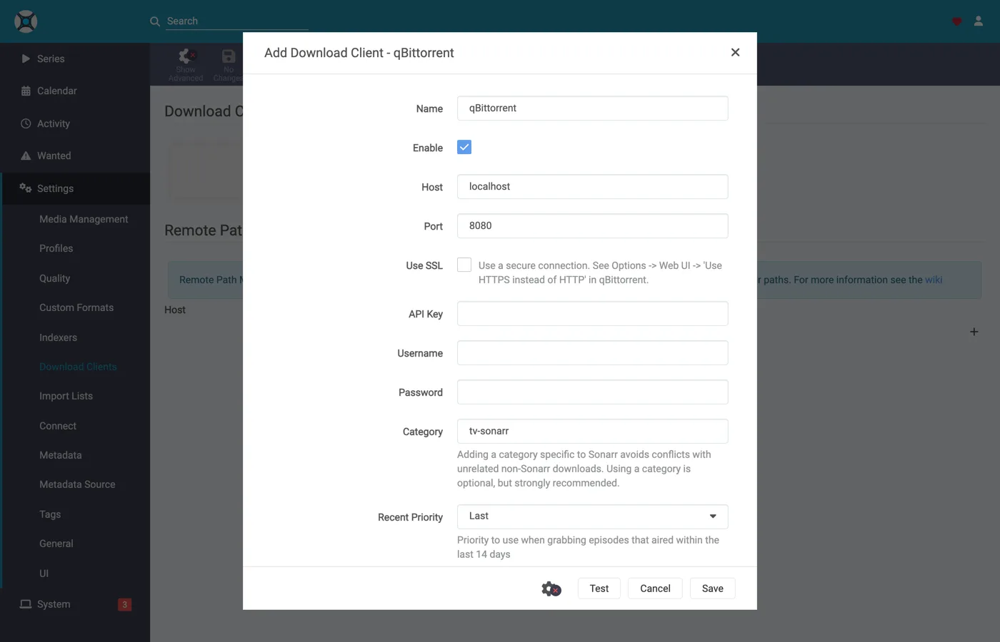
What to put in each field
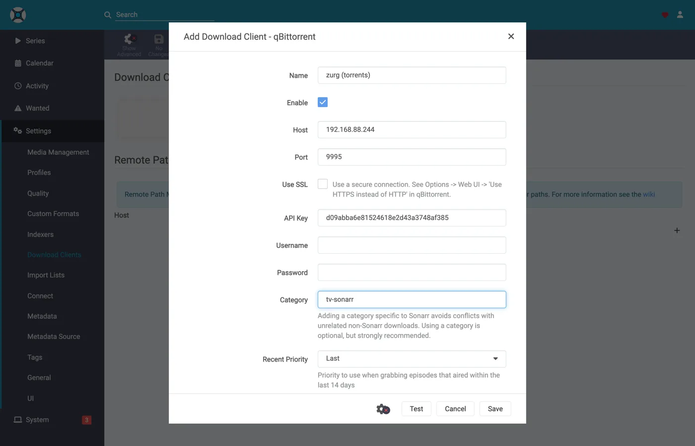
The API key shown is illustrative — paste your own.
In Docker, "localhost" and the hostname both lie. Inside a container, localhost is the container, and the machine's own hostname usually resolves to 127.0.1.1 — which is also the container. This rig's host is called zurg-server, and zurg-server inside the Sonarr container resolved to 127.0.1.1 while the very same name worked from the host shell. Use the host's LAN or Tailscale IP, never localhost and never the bare hostname.
Click Test. A green tick means the client's checks passed — API version, authentication, the category and the torrent list.
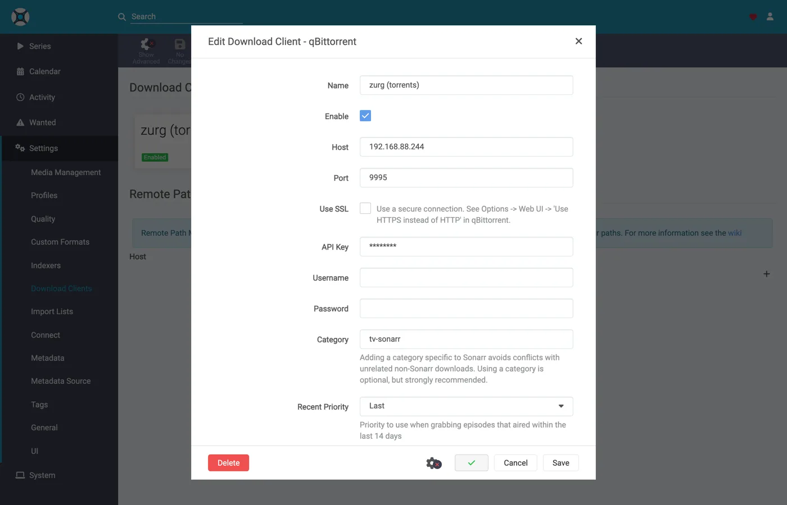
Now click Save.
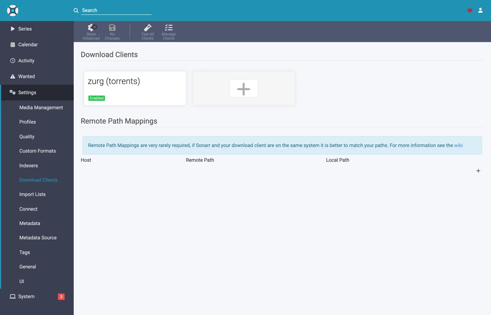
6. Add the root folder in Sonarr
Go to Settings → Media Management and scroll to the bottom.
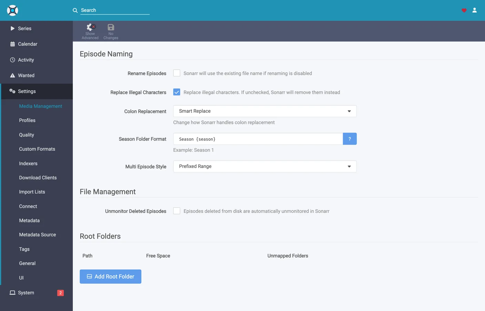
Click Add Root Folder. A file browser opens on the container's filesystem.
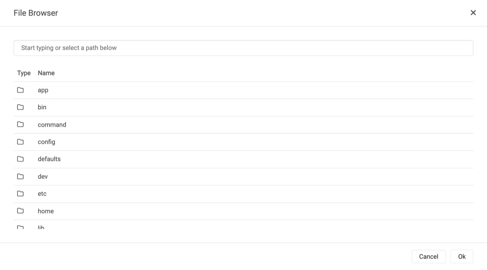
Type or navigate. If the mount is genuinely visible to Sonarr, __magic__ opens and shows what you made in step 4 — the fastest proof you will get that the bind mount is correct.
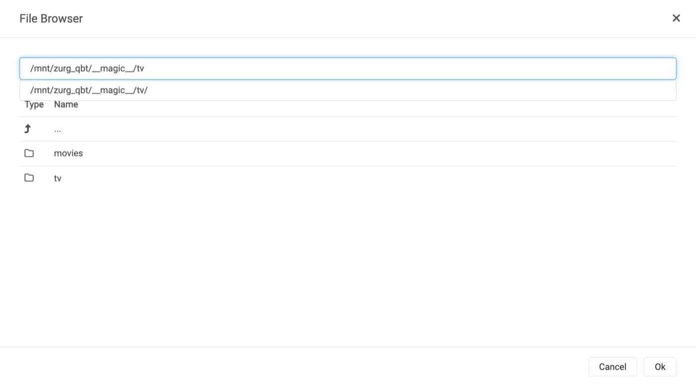
If this is empty or errors, stop and fix the mount before going further.
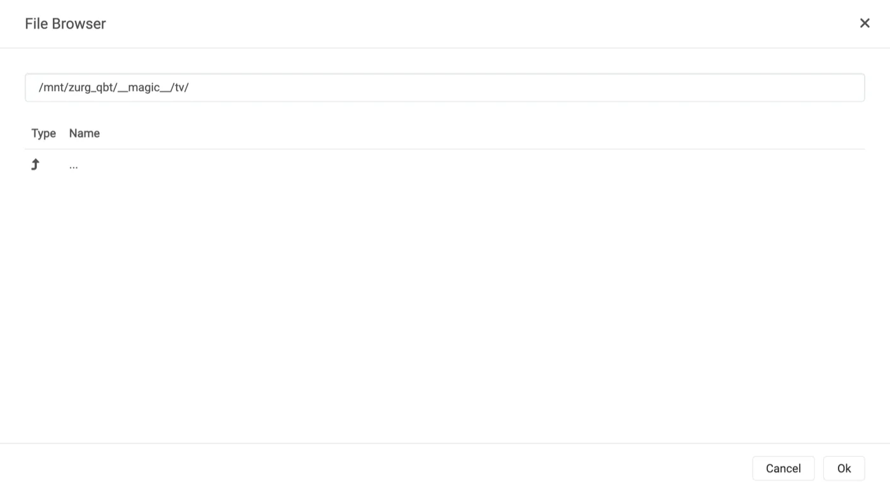
Finish the path at __magic__/tv and click Ok.
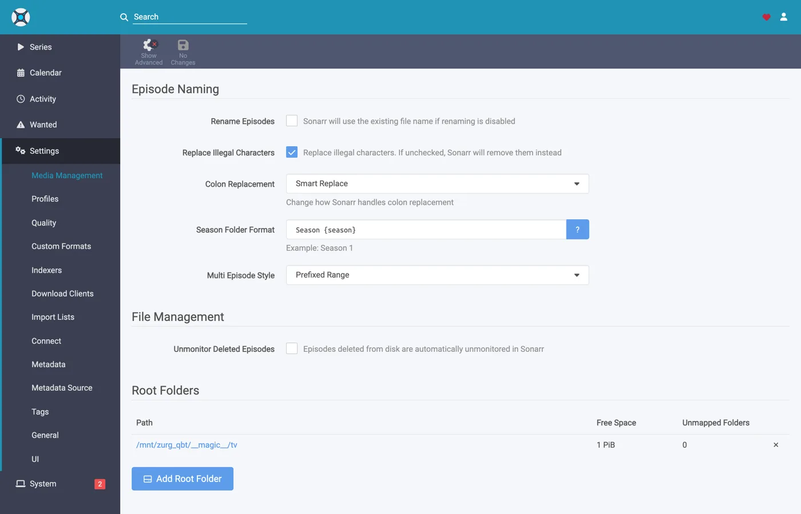
Free Space reading 1 PiB is zurg reporting a virtual filesystem, not a disk — that is expected, and it is what satisfies the *arr's free-space check before a grab.
7. Do the same in Radarr
Identical, with two values changed: the category is radarr and the root folder is __magic__/movies.
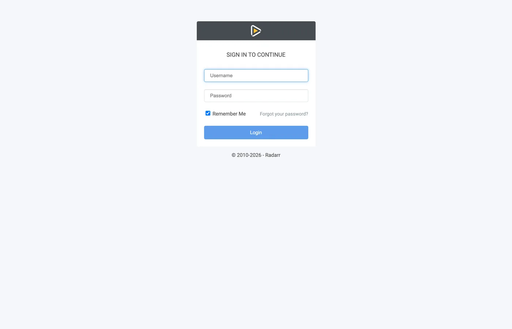
Radarr's first run works the same way — set Forms auth, then sign in.

Settings → Download Clients → +, then qBittorrent under Torrents.
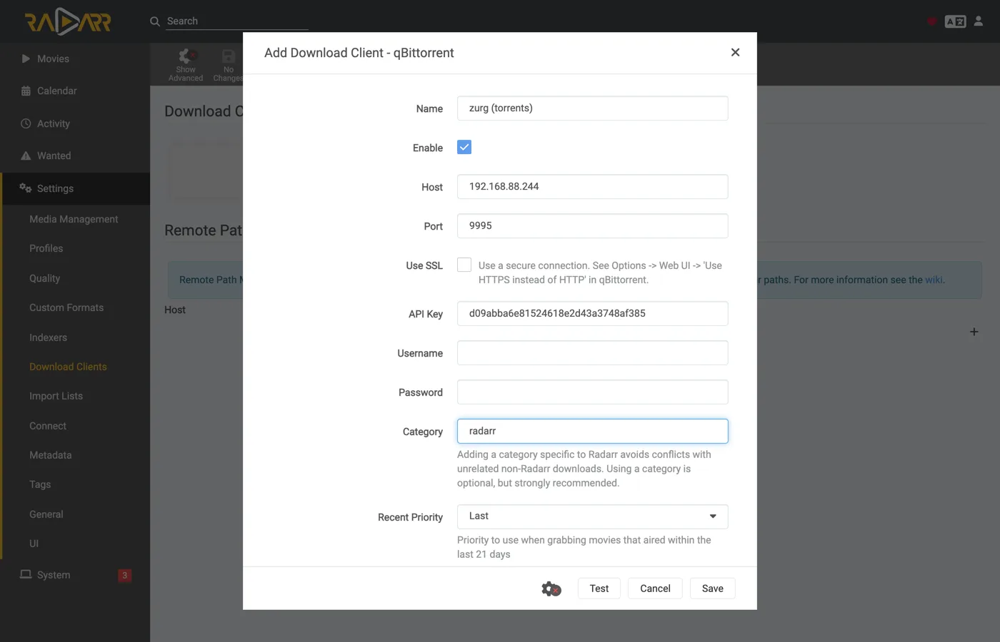
Same host, same port, same key. Only Category differs — radarr, not tv-sonarr.
Test, green tick, Save.
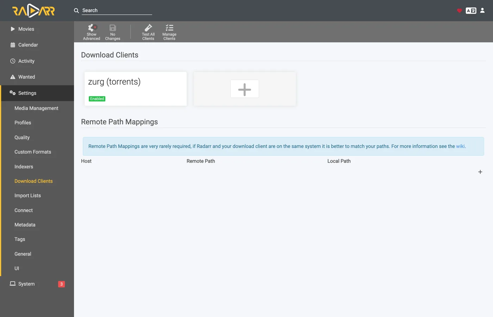
Then Settings → Media Management → Root Folders → Add Root Folder, and add /mnt/zurg_qbt/__magic__/movies.
One zurg, two clients, one queue. The torrent list each client sees is filtered by category and nothing else. Two Sonarrs both using tv-sonarr will see each other's grabs; Sonarr on tv-sonarr and Radarr on radarr will not. Keep one client per category and this never comes up.
8. If your *arr is in Docker
The same two problems as the Usenet walkthrough, with the same fixes — the mount is the mount — so this is the short version. That guide's step 8 has the detail.
The path zurg reports must be a path the client can open. If the container mounts the library somewhere other than zurg does, every import fails with download doesn't contain intermediate path or a remote-path health check. Set qbittorrent.save_path to the path the client sees, or add a remote path mapping:
qbittorrent:
save_path: "/data/zurg/__magic__" # what the *arr sees, not what zurg seesBind the mount's parent, not the mountpoint. Restarting zurg unmounts and remounts; a container that bound the mountpoint itself keeps the dead fuse connection and every read after that answers Socket not connected — and because both clients check free space before a grab, every release is silently rejected. Bind the parent with rslave and the remount arrives as a sub-mount event the container follows. This rig's containers were started before zurg ever mounted, and the mount still appeared inside them:
$ docker exec sonarr df -h /mnt/zurg_qbt
Filesystem Size Used Avail Use% Mounted on
zurg{8amax}: 1.0P 0 1.0P 0% /mnt/zurg_qbt9. Watch one grab go through
Add one thing, grab it by hand, and follow it the whole way. Everything below is a real grab through the setup above: Ghost in the Shell (1995), grabbed from an indexer by hand.
Grab it
Open the movie, click Interactive Search, and pick a release.
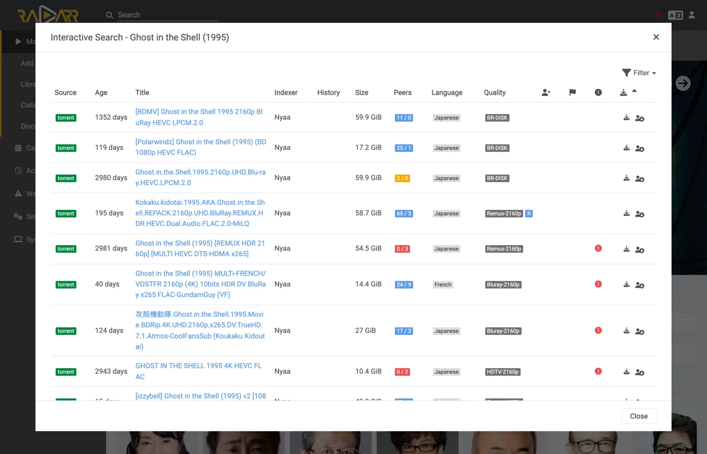
The Source column reads torrent — that is the protocol this endpoint takes. Click the circled-arrow button at the end of the row to grab it. If the client wants you to confirm the mapping first:
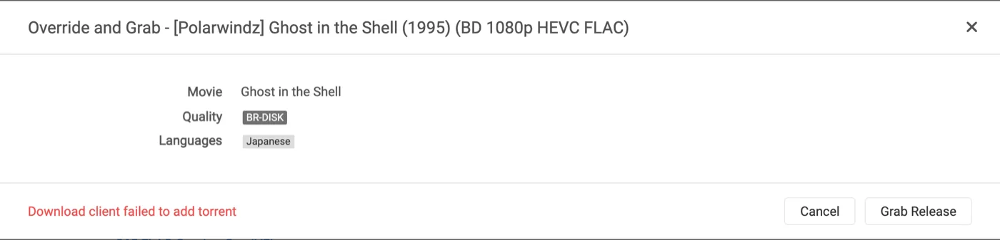
Override and Grab appears when the release does not match cleanly. Check the mapping and click Grab Release. A normal grab never shows this.
The account takes it
Two lines in zurg's log, and they are the whole add:
INFO router.qbittorrent qBittorrent: [Polarwindz] Ghost in the Shell (1995) (BD 1080p HEVC FLAC) (0c5e4077…) added to alldebrid as 720824192
INFO router.qbittorrent qBittorrent: [Polarwindz] Ghost in the Shell (1995) (BD 1080p HEVC FLAC) (0c5e4077…) finished on alldebridThe hash is the info hash the client sent. added … as 720824192 is the account's own id for it. This release was already cached on the account, so finished follows in about a second — an uncached one sits between the two lines while the account downloads it, and what the account is doing in that gap is what the client's queue shows:
A stalled swarm reports Downloading with the rate and the seed count at zero rather than as a stall warning — stalledDL is a state the *arrs act on for their failed-download handling, and a swarm with no seeds is not a verdict on the release.
The import happens
Activity → Queue, then Activity → History. Two events, seconds apart — Grabbed, then Movie Imported:
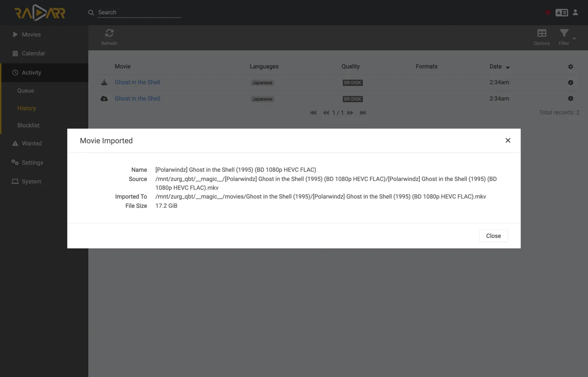
Expand the imported row and read the paths. Source is /mnt/zurg_qbt/__magic__/[Polarwindz] …/[Polarwindz] ….mkv and Imported To is /mnt/zurg_qbt/__magic__/movies/Ghost in the Shell (1995)/… — the file never left __magic__, which is what makes the import a rename.
A grab the client decides not to import stays in the queue as a warning instead. The one in this screenshot's queue row is an upgrade the quality profile refused — visible, one click from Remove, and clearing nothing by itself:
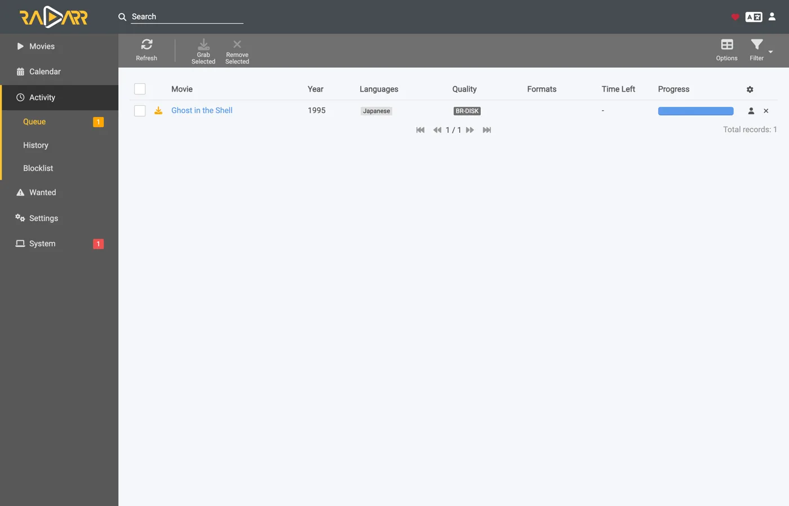
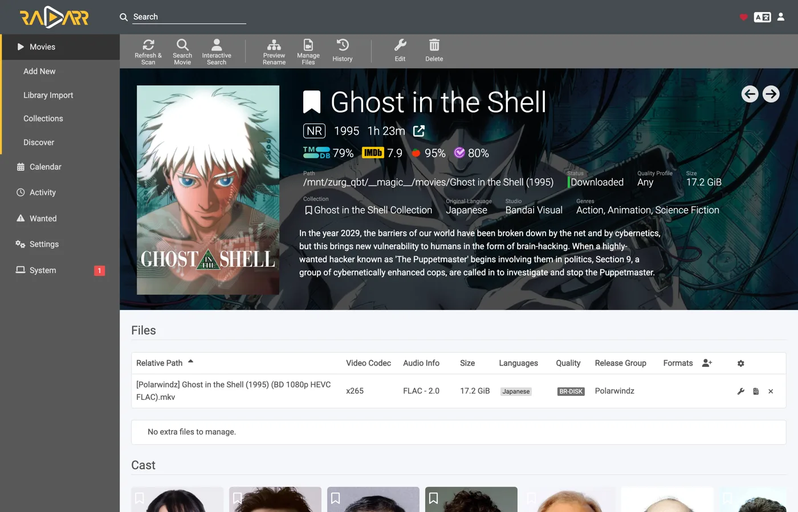
Status: Downloaded, Size 17.2 GiB — and nothing was downloaded to make that true. The bytes are read off the account when something plays the file.
Prove the file is real
The import moved the file into the root folder. Read both ends of one and ask ffprobe what it is:
$ F="/mnt/zurg_qbt/__magic__/tv/One Piece/Season 23/[AnoZu] One Piece S23E21 1080p CR WEB-DL AAC 2.0 H.264.mkv"
$ ls -la "$F"
-rw-rw-r-- 1 yowmamasita users 1446325722 Aug 31 00:44 …mkv
$ dd if="$F" bs=1M count=1 >/dev/null
1048576 bytes (1.0 MB, 1.0 MiB) copied, 0.00592934 s, 177 MB/s
$ ffprobe -v error -show_entries format=duration,size,format_name \
-of default=noprint_wrappers=1 "$F"
format_name=matroska,webm
duration=1415.808000
size=1446325722That one is a Sonarr grab — an episode pulled the same way, imported into tv/One Piece/Season 23/. A 23-minute Matroska, read straight off the debrid account. The bytes arrive when something reads them, not when the *arr imports.
From Sonarr, it looks the same
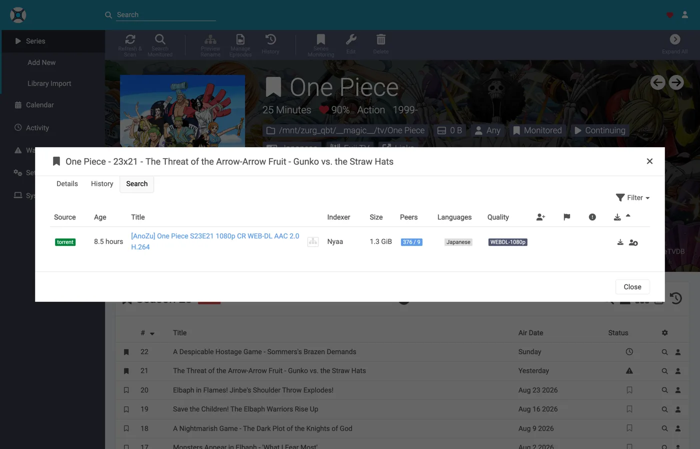
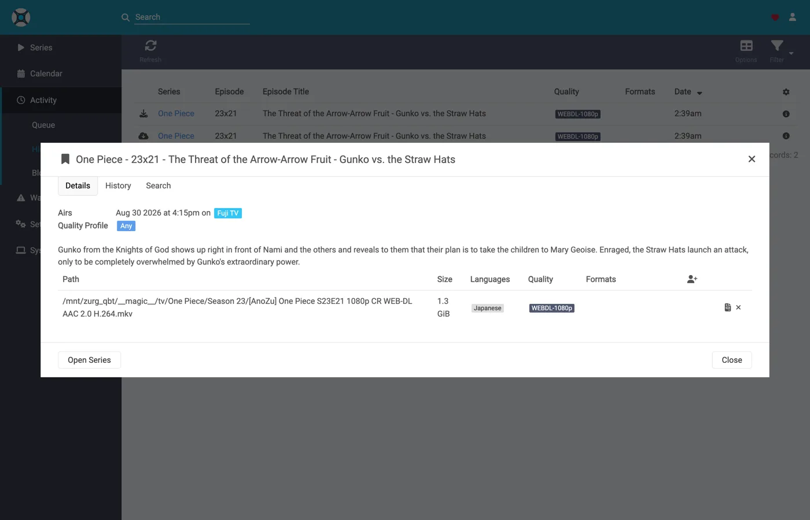
The same two history events, the same import-by-rename, and a queue that empties the moment the import lands — a cached release goes from grab to imported in a handful of seconds, which is why there is no mid-download screenshot of it here.
10. Prowlarr, manual grabs
Prowlarr speaks to the same endpoint — it shares the qBittorrent client code with the other two — but it is not an importer. It has no library and never imports anything; what it can do is push a release to the account by hand, which is exactly what its download client is for.
Prowlarr's first run is the same Forms-auth screen as the other two.
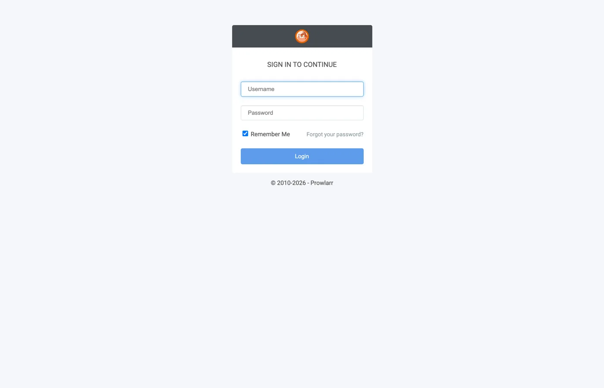
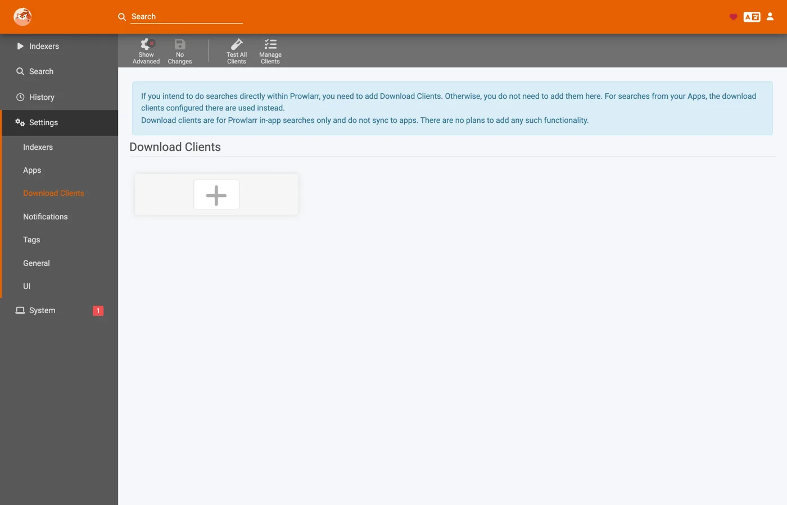
Settings → Download Clients → +, then qBittorrent — in Prowlarr's picker every client sits in one alphabetical list rather than the two columns the *arrs use. Same host, port and API key. Two fields differ from the *arrs:
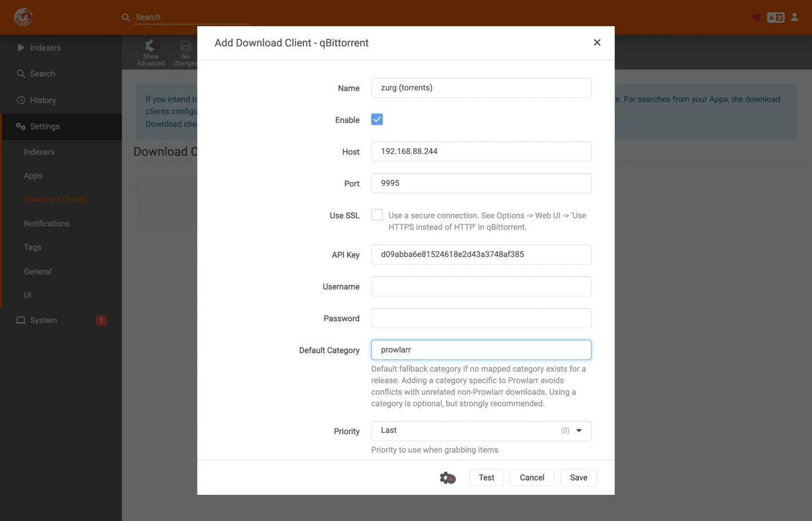
Test, green tick, Save.
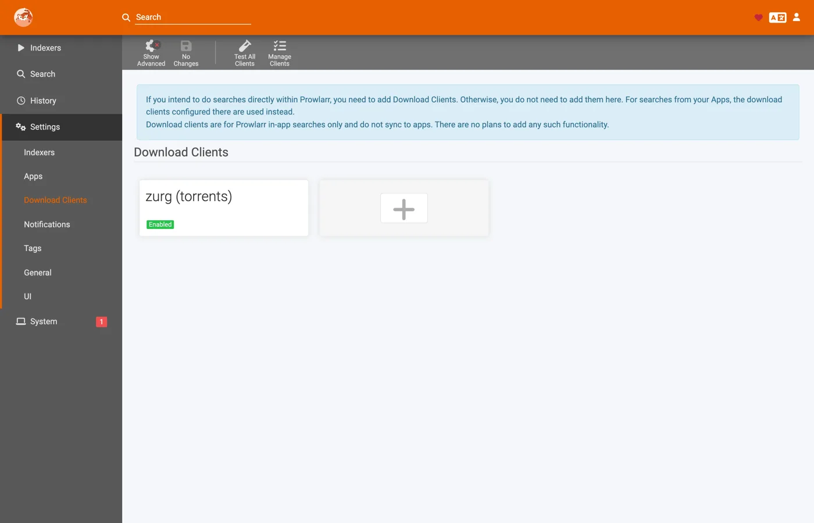
Then Search, type what you want, and push a row at the client:
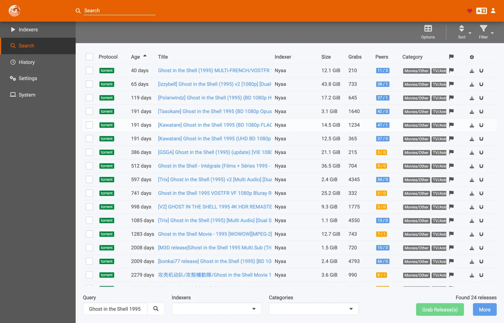
The release goes onto the account exactly as an *arr grab does — same add path, same categories, same __magic__ folder — and this one landed cached, finished inside a second. But nothing imports it. It sits in the account and serves from the mount, which is the point: Prowlarr's push is for put this on my debrid account now, not for the automated grab-import-clean pipeline. For that, keep Sonarr and Radarr pointed at the endpoint and let Prowlarr manage indexers.
If the import copies instead of moving
Everything above depends on the import being a rename. One setting in the *arr decides that, and it is the only part of the decision zurg has no say in.
The client will only move an imported file when it believes it is free to remove the download afterwards, which is three things at once: Remove Completed on, a finished-and-paused torrent, and a seed limit it can see has been reached. zurg reports the last two exactly as they have to be — every completed torrent comes back paused, at ratio 0 against a ratio limit of 0. Remove Completed is the one that is yours.
With it off the client copies instead, and off a debrid mount a copy means reading every byte of the release back over the network and writing it to local disk. The release in step 9 would go from a rename that moved nothing to a 17 GiB download, to import a file that was already there.
Nothing in the *arr says so. The import is reported as successful either way and the history row looks the same. The difference shows only in zurg's log:
A PUT of a media file arriving while an import is in flight is that import copying. The /magic/ page says the same thing more slowly: it reports the size of data/local, which is where a copying client's bytes land and where nothing else would put them. If that number grows every time something imports, this is why.
Turn Remove Completed back on and the next import is a rename again. Use Hardlinks instead of Copy is not a substitute — the client only consults it once it has already decided to copy, so it cannot turn a copy back into a move.
Timeouts, and cached-only mode
A grab that stops moving comes off the account it is on and is offered to the next. One key decides it:
qbittorrent:
download_timeout_mins: 15What counts as moving is a change of stage or a rise in progress, judged on the raw fraction the account reports rather than whole percent — one percent of a 100 GB release is a gigabyte. A release the account is unpacking is exempt from the clock: that stage sits at one figure for as long as it takes.
Fifteen is measured, not chosen. AllDebrid parks a healthy job in its own queue with every counter at zero; in the measurements behind the default, two runs out of two sat there for 580 and 622 seconds before downloading in seconds and finishing. A ten-minute default would have abandoned both.
The whole add is budgeted at 75 seconds. The *arrs cancel a torrents/add at 100 seconds and report the expiry as a connection failure, with no way to raise it. Every account shares the one deadline, so three accounts fit comfortably and a fourth gets whatever the first three did not spend.
Cached-only mode is the one worth knowing as a policy choice: the refusal happens inside the add, synchronously, and a synchronous refusal is the only signal the *arrs act on — they fail the grab and move to the next release in the list. Everything after the add reaches them as a warning about a download in progress, which they wait on. Set download_timeout_mins: 0 and an uncached release is rejected on the spot instead of being downloaded.
What works, and what does not
Works:
- The connection test in all three clients — API version, authentication, the category and the torrent list.
- Grabbing, queue, history, import by rename, and the post-import cleanup, in Sonarr and Radarr.
- Re-grabbing a release the account already holds. The *arr gets the finished torrent back and imports it; the account keeps one copy.
- Multiple accounts: a grab is offered to each in the order of
providers:, and a refusal or a stall moves to the next. - Pushing a release by hand from Prowlarr.
Does not:
- The qBittorrent Web UI. This is the API only; there is no page to open.
- Seeding, queueing and priorities. There is no swarm. Pause, force-start, reprioritise, recheck, relocate and share limits are accepted and do nothing.
- Failure as a first-class state. qBittorrent's API has no way to say a download failed, so a release no account would take reaches the *arr as a warning, never as a blocklist entry. It is visible in the queue with the reason attached, one click from Remove → Blocklist and Search, but it does not clear itself and nothing re-grabs unattended. This is the real difference from the SABnzbd endpoint, which can report a failed job and have the client react.
- Adding by plain HTTP URL.
torrents/addtakes magnets and uploaded.torrentfiles. Both *arrs send one of those; a barehttp://…/x.torrentis refused. - Basic auth on the endpoint. The API key is the only gate.
Blocked release names, Real-Debrid only. RD refuses some releases on the filename alone — WEB-DL, the rip family, a source tag dot-adjacent to an old codec. zurg knows the patterns and refuses such a grab immediately rather than spending an add slot and a minute of retries on a refusal that was certain; the client fails that grab and takes the next release, which is what you want. On TorBox and AllDebrid the same release is added normally.
Troubleshooting
Where the state lives
The __magic__ page on zurg's dashboard shows the results of the imports: placements are files the clients moved, tombstones are the job folders they deleted afterwards, and the releases the endpoint took are listed as rows against the folders they were imported out of.
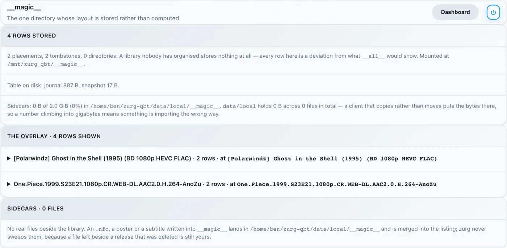
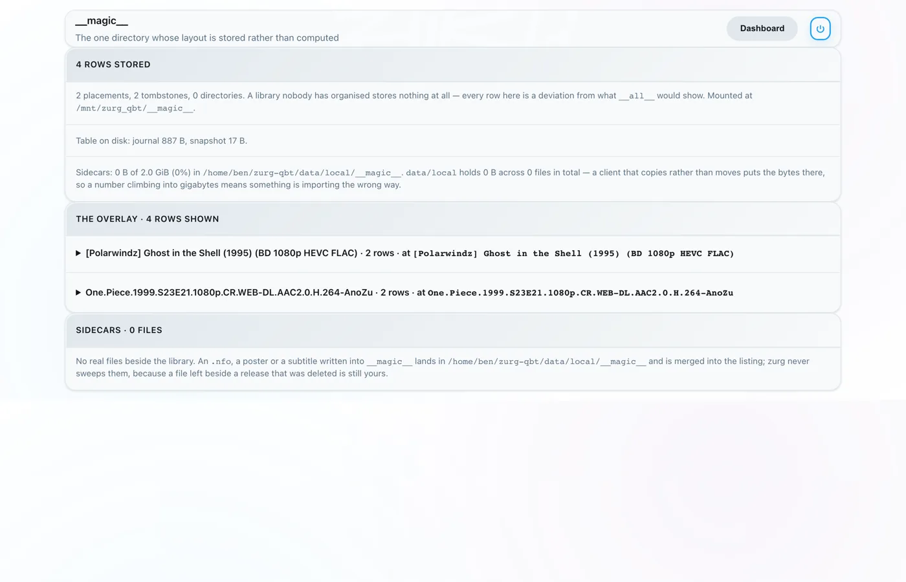
The reference has every qbittorrent: key, and the client contract — written against the Sonarr and Radarr source — is the specification the endpoint answers to, with the file and line of every claim.